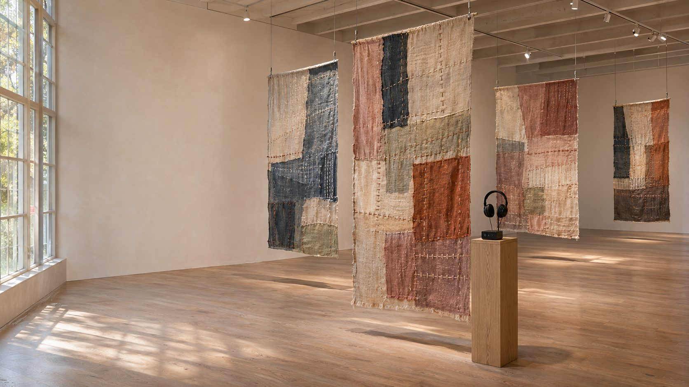

Matt Vassar, PhD
Principal Investigator
Director of the SAFE Evidence Lab and the Office of Medical Student Research, and developer of the Testimony Quilting™ method.
Medical student enrichment program
A program in patient safety and physician professionalism that asks future physicians to receive the testimony of people who have lived through medical harm, before they are ever in a position to cause it.

Why this program
Medical education teaches root cause analysis, checklists, and disclosure scripts. Knowledge alone rarely changes how a physician responds when harm occurs. What changes practice is sustained engagement with the patient's experience: the capacity to listen, stay present with discomfort, and take the human consequences of a clinical decision seriously.
Until now, students at Oklahoma State University Center for Health Sciences have had no structured opportunity to hear directly from patients, families, and clinicians about medical harm. Most will go on to practice in rural and underserved Oklahoma communities, where patient safety failures carry an especially high cost. Bearing Witness creates that opportunity and builds it into a resource the school can use year after year.
How it works
The program runs in three phases. Each one is carried out in Oklahoma, with Oklahoma voices, by OSU-CHS students and local makers.
Fall 2026
Trained OSU-CHS medical students conduct IRB-approved, recorded interviews with patients, family members, and healthcare providers who have experienced or witnessed medical harm. Every participant gives informed consent and decides how their story may be used.
Winter 2026–27
Oklahoma quilters translate curated testimonies into abstract fabric panels using the Testimony Quilting™ method, which encodes each narrative in color, pattern, and stitch. Where possible, storytellers help design their own panel. The finished panels stay at OSU-CHS for annual use.
Spring 2027
Students walk among the panels and scan a QR code beside each one to hear the original testimony on their own phone and headphones. The session then moves to guided reflection and a professional discussion.
The session
The session is voluntary and open to OSU-CHS medical students in every year. A neuropsychologist is present throughout, and every participant is connected to campus counseling resources.
Students move slowly through the testimony panels, listening to the recorded accounts behind them. Facilitated prompts connect what the panel shows to what the speaker said.
A structured written reflection asks what was heard, what it evoked, and what it means for how each student intends to practice.
A professional discussion on error disclosure, accountability, and patient safety advocacy in Oklahoma.
Why textiles
Video and lecture formats tend to put learners into the same passive mode they use for didactic content. An abstract fabric panel works differently. It asks the viewer to slow down, read color and pattern, and hold an image alongside a spoken account. That is close to the clinical skill the program is trying to build: staying present with a patient who is describing something painful.
Because the panels are durable and the recordings are archived, a single investment serves many cohorts of students, and future cohorts can add new testimony to the collection.
Evaluation
Anonymous pre- and post-session surveys on empathy, readiness to discuss medical harm with patients, and comfort acknowledging error.
With permission, students' written reflections are coded and analyzed for recurring themes.
Findings go to the OSMA Foundation in a written outcome brief, and a student presents the results at an OSMA or regional meeting.
Program team
Principal Investigator
Director of the SAFE Evidence Lab and the Office of Medical Student Research, and developer of the Testimony Quilting™ method.
Co-Investigator
Neuropsychologist who leads the reflection framework and supports students during and after each session.
Program Manager
OSU-CHS medical student who coordinates testimony collection, panel production, and session planning.
Acknowledgment
This project was funded in part by a grant from OSMA Foundation
Bearing Witness is a program of the Office of Medical Student Research and the SAFE Evidence Lab at Oklahoma State University Center for Health Sciences, Tulsa.
Questions about the program
matt.vassar@okstate.edu
Address
Office of Medical Student Research
Oklahoma State University Center for Health Sciences
1111 W. 17th St., Tulsa, OK 74107